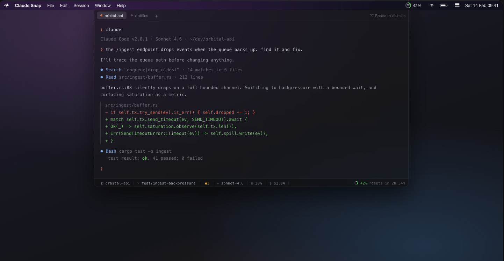

Native Swift · macOS 13+ · No telemetry
Claude in Your Menu Bar
Live usage tracking + instant terminal access (Ctrl+`) for Claude Code

Live token usage
Session usage as a glyph, ring, text, or full readout in the menu bar.
Quake-style terminal
Hit Ctrl+` in any app to drop a PTY running claude — no wrapper.
Directory persistence
Reopens in your last project folder, so Claude Code launches trusted.
Nothing to sign into
Reads Claude Code's own Keychain credentials. No analytics, no telemetry.